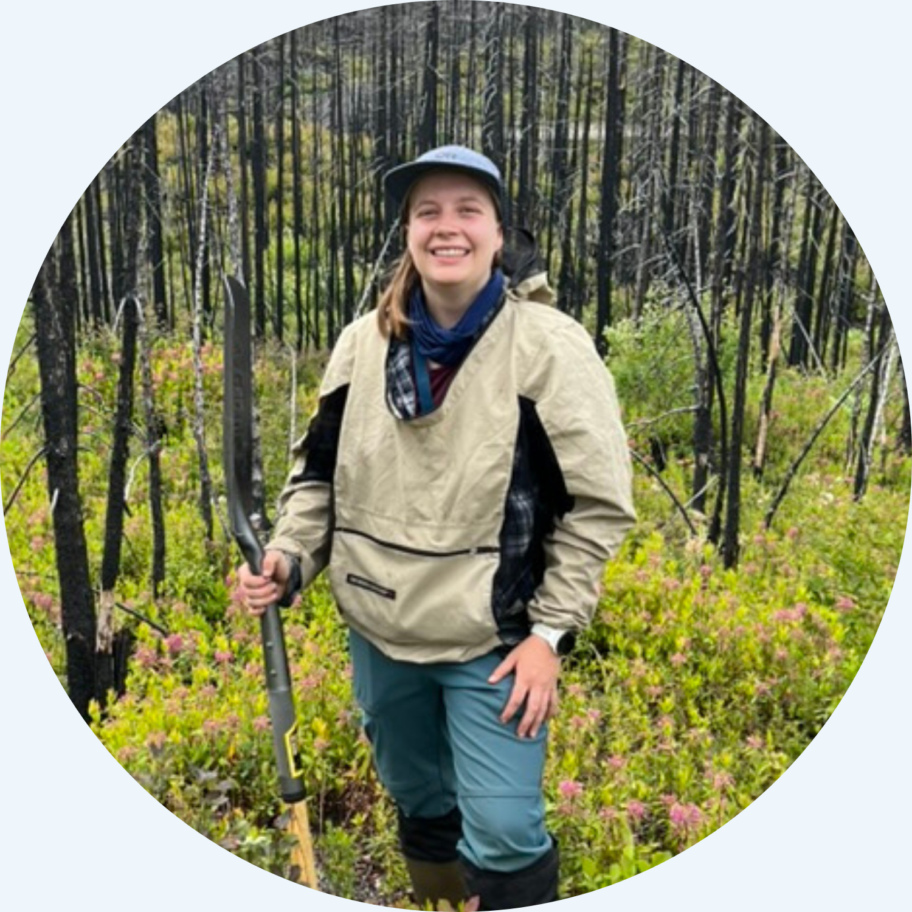
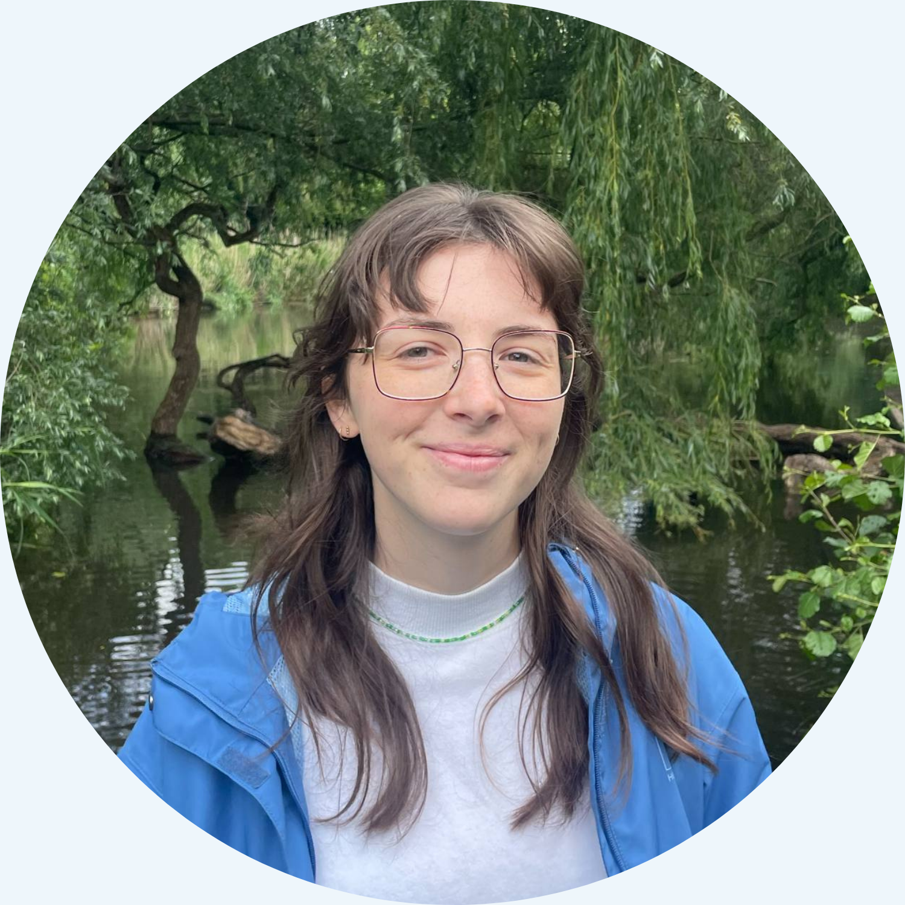
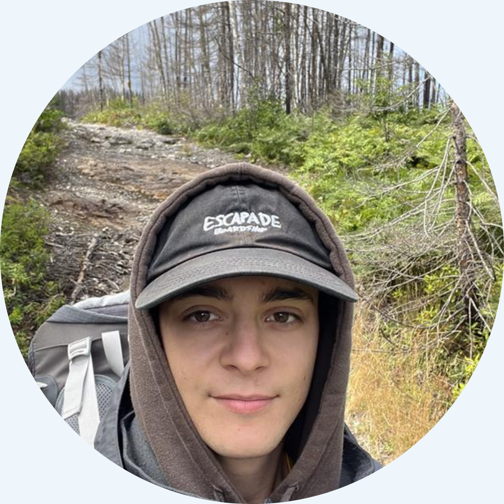
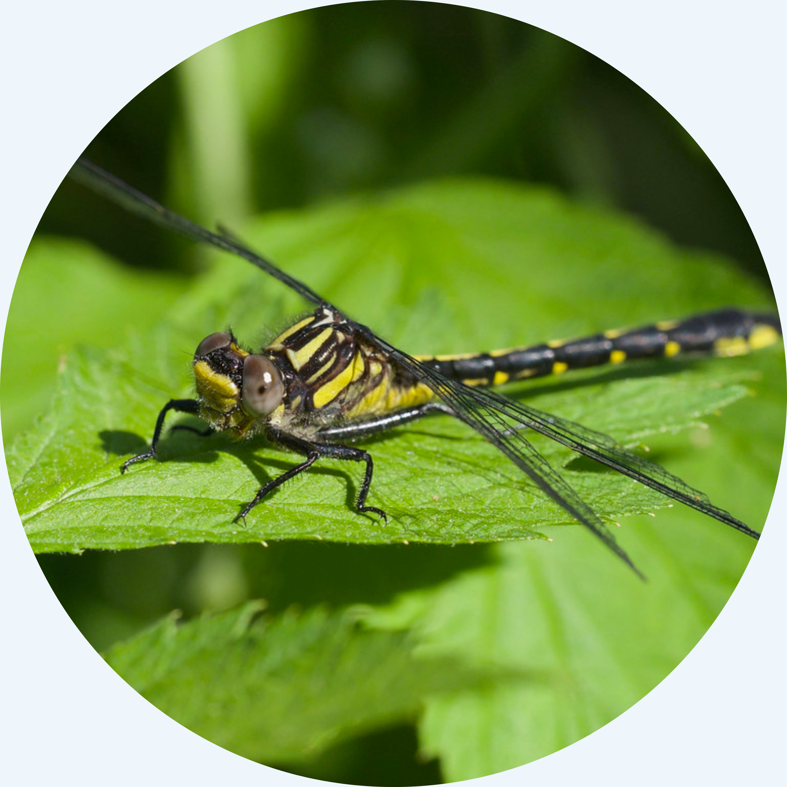

Membres actuels
Doctorat
Mathilde Bélair
En codirection avec Jean-François Lapierre
Quel est l’impact des feux de forêt sur le cycle du carbone aquatique? Dans ma thèse, j’utilise une combinaison d’approches pour répondre à cette vaste question à différentes échelles spatiales et temporelles.
Mon site d’étude au sein du laboratoire se trouve au nord du Saguenay. J’y suis le niveau d’eau le long de deux gradients hydrologiques, du ruisseau d’amont au lac d’amont, jusqu’aux lacs qui confluent en aval, dans des bassins versants touchés ou non par des feux de forêt. Dans les bassins brûlés, je suis aussi les concentrations de gaz dissous (CO₂, CH₄ et O₂) et j’applique des traceurs isotopiques du carbone et de l’eau le long de ces deux transects.

William Brais
En codirection avec Sylvain Jutras
Comment les émissions de CO₂ et de CH₄ des ruisseaux d’amont réagissent-elles à la dynamique hydroclimatique?
Mes sites d’étude sont répartis le long d’un gradient climatique et comprennent trois bassins versants forestiers d’amont instrumentés au Québec. Je combine plusieurs capteurs pour suivre en continu les concentrations de gaz dissous, l’expansion et la contraction du réseau hydrographique, ainsi que la dynamique des échanges gazeux turbulents.

Maîtrise
Léonie Thibault-Rousseau
Comment les épisodes de crue façonnent-ils l’exportation latérale du carbone dans les ruisseaux forestiers d’amont?
Je suis responsable du bassin versant d’amont de la SBL, où j’ai instrumenté un ruisseau d’amont et un versant à écoulement préférentiel d’eau souterraine. J’y mesure en continu les concentrations de CO₂, de CH₄ et d’O₂, ainsi que la MODC (C-DOM), la conductivité, la hauteur de la nappe phréatique et la température.
[Pour en savoir plus →]

Joël Gaxotte
En codirection avec Alexis Berg
Que peuvent nous apprendre les modèles du système terrestre sur l’avenir de l’exportation du carbone terrestre vers les océans à l’échelle mondiale?
J’utilise le modèle CNRM-ESM2-1 pour tester l’effet de différents scénarios de changements climatiques sur l’exportation de carbone organique des rivières vers les océans à travers le monde.
J’ai produit le tutoriel « Comment délimiter un bassin versant dans R », que vous trouverez dans la page des ressources.
Léon Leblanc
En codirection avec Jean-François Lapierre
Quelle est l’empreinte en gaz à effet de serre des fossés de drainage agricole dans le sud du Québec, et comment pouvons-nous mieux éclairer les bilans régionaux?
[Pour en savoir plus →]

Nina Miller
En codirection avec Julia Mlynarek
Nous avons récemment découvert une population de gomphes des rapides, une espèce rare de libellule, dans la rivière Nicolet Sud-Ouest. Mon projet vise à mieux comprendre les caractéristiques de son habitat afin de mieux orienter les stratégies de conservation.
[Pour en savoir plus →]

Baccalauréat
Anciens membres
Stagiaires de premier cycle
- Léon Leblanc (2025-2026)